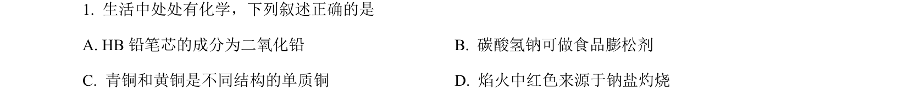
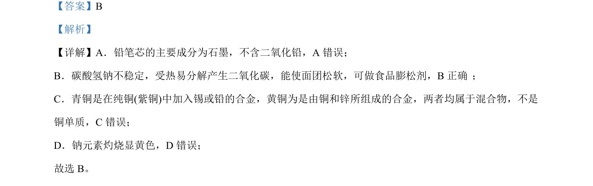

考点：物质成分 碳酸氢钠性质 合金概念 焰色反应

本题通过判断常见物质成分与性质的正误，考查生活化学与基础元素化合物知识。

📄 原 PDF 第 1 页：
素材/真题/吉林/2008-2024·（吉林）化学高考真题/2022年高考化学试卷（全国乙卷）（解析卷）.pdf
【答案】B 【解析】 【详解】A．铅笔芯的主要成分为石墨，不含二氧化铅，A 错误； B．碳酸氢钠不稳定，受热易分解产生二氧化碳，能使面团松软，可做食品膨松剂，B正确 ； C．青铜是在纯铜(紫铜)中加入锡或铅的合金，黄铜为是由铜和锌所组成的合金，两者均属于混合物，不是 铜单质，C错误； D．钠元素灼烧显黄色，D 错误； 故选 B。